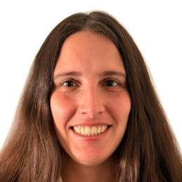
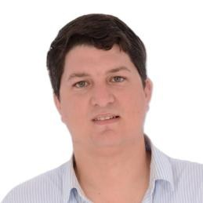
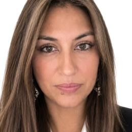
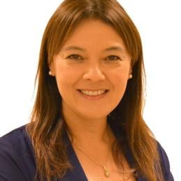
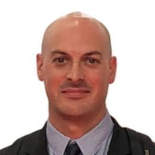
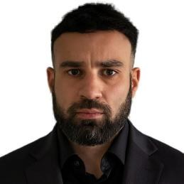

María Arbilla
Licenciada en Comunicación · Corte Electoral
Siete integrantes llevaron adelante ARCO durante el diplomado. El portal reconoce el trabajo colectivo y no atribuye aportes individuales.

Licenciada en Comunicación · Corte Electoral
Contador · División Gestión de Procesos, MTOP

Analista en Comunicación Corporativa y RR. PP. · Corte Electoral · Agencia SYNOVA

Doctora en Derecho · Téc. Profesional IMPO (Diario Oficial) · Especialista en DDHH y Políticas Sociales

Abogada, asesora jurídica · Presidencia de la República

Arquitecto IXOU · ORT · Diploma en Arquitectura Sostenible · Ganador Premio Nacional de Eficiencia Energética

TGO. Int. en Tecnología Industrial · Director de Compras de Mantenimiento · División Limpieza, Intendencia de Montevideo
Nombres, cargos y retratos tomados de la lámina «Nuestro equipo» de la presentación Demo Day 2026. Las responsabilidades de cada integrante dentro de ARCO no están documentadas.